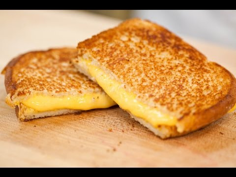
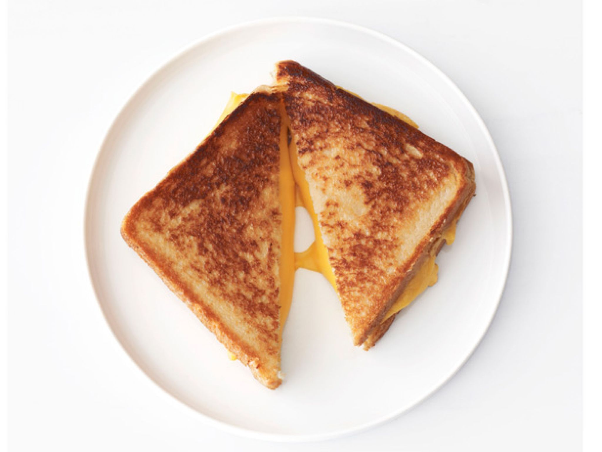
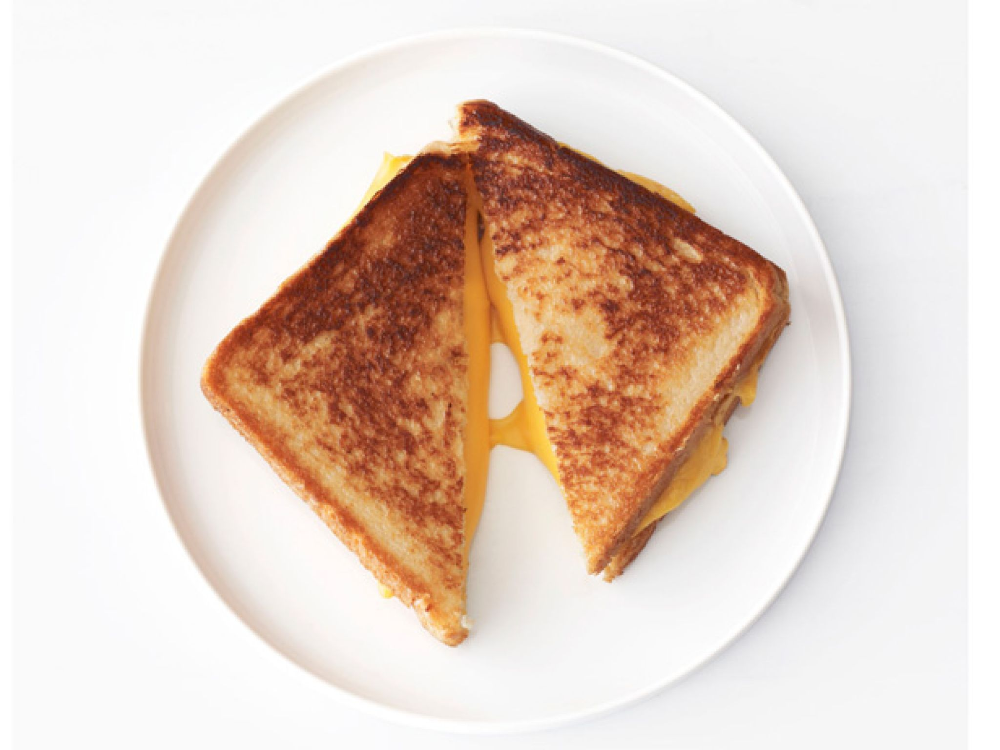

 

Description:
A grilled cheese sandwhich is a basic sandwhich generally made with one or more varieties of cheese on any sort of bread, such as flat bread or wheat bread, that may include spreads such as butter or mayonnaise.
Ingredients:
4 slices white bread
3 tablespoons butter, divided
2 slices Cheddar cheese
Directions:
1. Preheat skillet over medium heat.
2. Generously butter one side of a slice of bread. Place bread butter-side-down onto skillet bottom and add 1 slice of cheese
3. Butter a second slice of bread on one side and place butter-side-up on top of sandwich
4. Grill until lightly browned and flip over; continue grilling until cheese is melted
5. Repeat with remaining 2 slices of bread, butter and slice of cheese